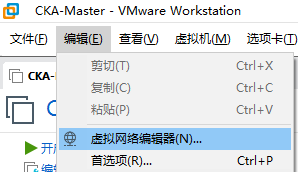
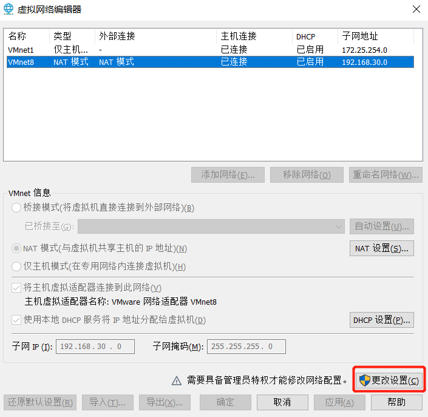
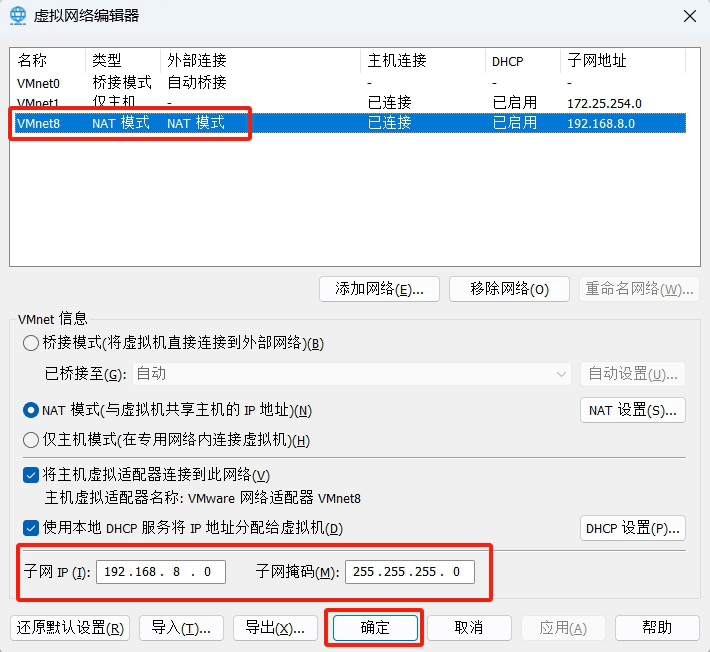

作者：李晓辉
微信联系：lxh_chat
联系邮箱: 939958092@qq.com
| CPU | 内存 | 硬盘 |
|---|---|---|
| 至少 8 核心，推荐 16 核心 | 至少 32G，推荐 64G | 至少200G空闲的SSD磁盘 |
请将VMware workstation的VMnet8的NAT网卡的网段设置为192.168.8.0/24网段，VMnet1网卡的仅主机网段设置为172.25.250.0/24后再开机，方法如下，我这里只举例了设置VMnet8，请你根据同样的方法设置VMnet1的网段
虚拟机中的IP不允许修改，所以你需要按照以下方法配置VMware 设置以便于能够联网
为了更顺利的使用ssh工具连接虚拟机，需要在安装好VMware的情况下，将虚拟机所使用的网络修改为VMnet8(NAT)，并将VMnet8的网络修改为192.168.8.0/24网段
在VMware软件左上角点击编辑，点击虚拟网络编辑器

默认无法修改，请点击更改设置，请在弹出框中，点击是

确保选中了VMnet8，并将子网信息改为192.168.8.0， 掩码255.255.255.0点击确定

至此，我们已经可以用ssh工具来远程连接我们的VMware 虚拟机了，不要忘记用同样的步骤去设置VMnet1这个网卡的网段，设置好之后，你现在可以开机workstation这一台机器了。
请确保workstation已经正常开机看到桌面后，再开master01，性能有限，不要操作太快，最好等个1分钟再开master01
请勿修改虚拟机中的任何网络信息，日常练习执行命令都在workstation这一台机器上
| 开机顺序 | 主机名 | CPU | 内存 | 硬盘 | VMware网卡类型 | IP | 角色 | 备注 |
|---|---|---|---|---|---|---|---|---|
| 1 | workstation | 8核心 | 16G内存，推荐20G | 500G | NAT NAT 仅主机 |
192.168.8.200/24 172.25.250.9/24 192.168.51.200/24 |
容器镜像仓库 Gitlab 代码库 Helm 服务器 DNS 服务器 Haproxy服务器 OpenShift 客户端 |
|
| 2 | master01 | 8核心 | 16G内存，推荐20G | 500G | NAT 仅主机 |
192.168.8.10/24 192.168.51.10/24 |
OpenShift v4.12 | Multus 网络网卡名称 ens192 Multus IP 地址：192.168.51.10/24 |
所有虚拟机都做了一个名为v4.12的快照，有问题可以恢复到这个快照进行恢复，但是请注意，不要在开机状态下直接恢复快照，可能会导致虚拟机文件丢失
OpenShift、Quay和Gitlab的控制台书签已在student用户的浏览器就绪
不要试图ssh和控制台用root登录master01，OpenShift默认不支持这些登录方式，你只能用core这个用户名ssh，还有就是整个课程中你只需要用oc命令连接，压根不用ssh到master
- 控制台URL：https://console-openshift-console.apps.ocp4.example.com
- 临时登录用户名kubeadmin
- 密码gdtpf-qvRqf-pekZF-2vABT
- URL：https://registry.ocp4.example.com:8443
- 用户名：admin
- 密码: redhatocp
- URL：https://git.ocp4.example.com
- 用户名：developer
- 密码: redhatocp
虚拟机账号密码：
包括集群虚拟机的第一次开机以及后续的每次重启，都会生成新的客户端证书请求，都必须审批启动服务的证书，执行以下命令完成证书审批才能正常启动
每次启动可能需要35分钟左右，耐心等待，在集群启动之前，这条命令将会失败，你可以多次重试，直到可以返回数据
oc get csr -o name | xargs oc adm certificate approve
正常输出如下：
certificatesigningrequest.certificates.k8s.io/csr-4pjtx approved
certificatesigningrequest.certificates.k8s.io/csr-72flh approved
certificatesigningrequest.certificates.k8s.io/csr-8brdv approved
certificatesigningrequest.certificates.k8s.io/csr-jn4m8 approved
certificatesigningrequest.certificates.k8s.io/csr-prn6v approved
certificatesigningrequest.certificates.k8s.io/csr-q6h5l approved
certificatesigningrequest.certificates.k8s.io/csr-srm27 approved
certificatesigningrequest.certificates.k8s.io/system:openshift:openshift-authenticator-89tmt approved
certificatesigningrequest.certificates.k8s.io/system:openshift:openshift-authenticator-n5j4r approved
certificatesigningrequest.certificates.k8s.io/system:openshift:openshift-monitoring-f87sx approved
certificatesigningrequest.certificates.k8s.io/system:openshift:openshift-monitoring-vr8c8 approved
如果提示以下内容，就等等再执行证书审批，隔一会儿试试
Unable to connect to the server: x509: certificate has expired or is not yet valid: current time 2024-03-30 T11:40:36+08:00 is after 2024-03-29T07:41:23Z
在每次重启虚拟机时，都建议在所有操作系统全起来之后执行上面这个命令，直到集群的所有operator可用状态为True
审批证书后，集群将会经过一阵繁忙的初始化操作，请耐心等待，直到执行下面的命令时，所有的集群operator都是正常
oc get co
执行后，可能会看到各种报错，那是正常初始化，请不断执行此命令，直到所有报错消失即可。
使用邮件中的账号密码登录控制台
加入并点开当期班级的内容
观看以下视频学习各个按钮操作
本文档在线版本：https://www.linuxcenter.cn